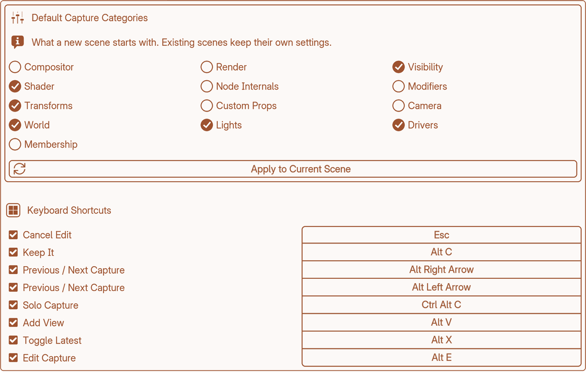

Preferences
1.0.4Found under Edit → Preferences → Add-ons → Keep it.

Default Capture Categories
Which categories a new scene starts with. All twelve are listed, and out of the box six are on: Object Transforms, Visibility & Display, Shader Nodes, Lights, World and Drivers.
Existing scenes keep their own settings — changing this doesn’t reach back into a file you already have open.
Apply to Current Scene — pushes these defaults into the scene you have open right now. It’s an overwrite, not a merge: anything switched on in that scene and not in the defaults gets switched off.
Keyboard Shortcuts
Every Keep it shortcut, editable. Change a key combination, or switch one off entirely if it clashes with something else you use.